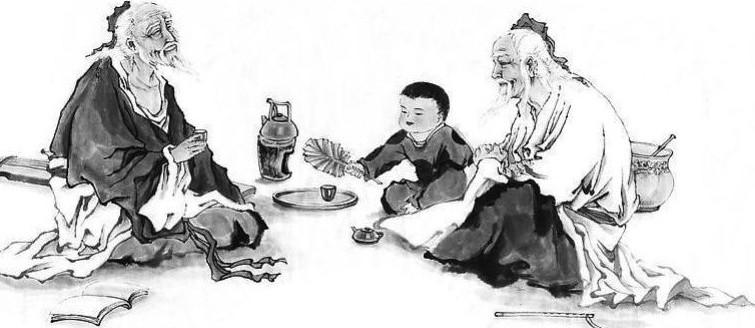
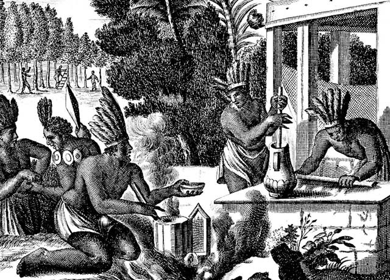
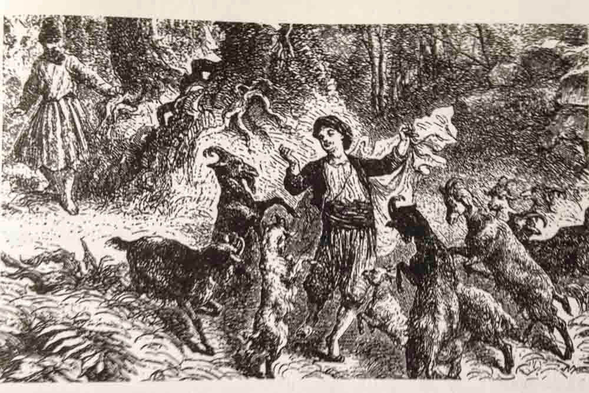

According to Chinese legend, the Chinese emperor Shennong, reputed to have reigned in about 3000 BCE, inadvertently discovered tea when he noted that when certain leaves fell into boiling water, a fragrant and restorative drink resulted.[231] Shennong is also mentioned in Lu Yu's Cha Jing, a famous early work on the subject of tea.[232]
The earliest credible evidence of either coffee drinking or knowledge of the coffee plant appears in the middle of the fifteenth century, in the Sufi monasteries of the Yemen in southern Arabia.[233] From Mocha, coffee spread to Egypt and North Africa, and by the 16th century, it had reached the rest of the Middle East, Persia and Turkey. From the Middle East, coffee drinking spread to Italy, then to the rest of Europe, and coffee plants were transported by the Dutch to the East Indies and to the Americas.[234]
Kola nut use appears to have ancient origins. It is chewed in many West African cultures, in both private and social settings, to restore vitality and ease hunger pangs.
The earliest evidence of cocoa bean use comes from residue found in an ancient Mayan pot dated to 600 BCE. Also, chocolate was consumed in a bitter and spicy drink called xocolatl, often seasoned with vanilla, chile pepper, and achiote. Xocolatl was believed to fight fatigue, a belief probably attributable to the theobromine and caffeine content. Chocolate was an important luxury good throughout pre-Columbian Mesoamerica, and cocoa beans were often used as currency.[235]
Xocolatl was introduced to Europe by the Spaniards, and became a popular beverage by 1700. The Spaniards also introduced the cacao tree into the West Indies and the Philippines. It was used in alchemical processes, where it was known as "black bean".[citation needed]
The leaves and stems of the yaupon holly (Ilex vomitoria) were used by Native Americans to brew a tea called asi or the "black drink".[236] Archaeologists have found evidence of this use far into antiquity,[237] possibly dating to Late Archaic times.[236]
